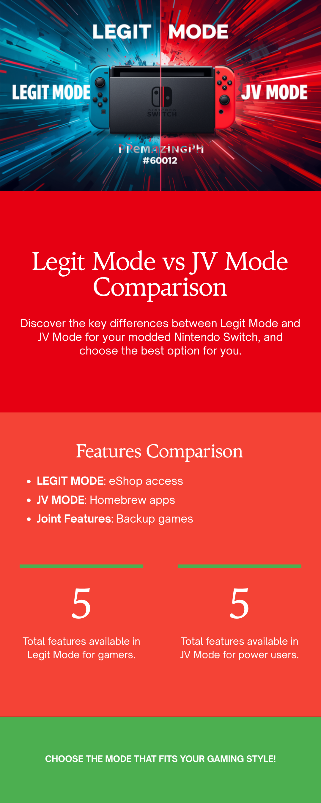

Network issues on the Switch usually fall into one of three buckets: 5GHz won't connect, can't reach Nintendo services, or general flakiness. Let's go through each.
The Switch is region-locked for 5GHz channels. If your router is broadcasting on a channel the Switch's region doesn't allow, it won't see the network.
Fix: Log into your router admin panel (usually 192.168.1.1 or similar — check the sticker on your router). Find the 5GHz WiFi settings and change the channel to 36, 40, 44, or 48. These are the lower 5GHz channels that almost every region supports.
If you're not sure how to access your router admin: Google search for your router model or check the Reddit thread on this issue.
If WiFi keeps dropping or connection tests fail:
This isn't a bug — it's how we set up your console to keep you safe.
In JV (Jailbreak) mode, your PremazingPH setup blocks connections to Nintendo's servers. That means no eShop, no online multiplayer, no Nintendo Account sync. We do this so Nintendo never sees your modded console talking to them — which is what triggers bans.
If you want to use eShop or play Splatoon online: switch to Legit Mode (OFW) via Hekate. In Legit Mode, all Nintendo services work normally.

Even with all the safety measures we apply, no setup is 100% ban-proof. Here's the honest picture:
Once a console is banned, it can't access Nintendo online services in any mode. The console still works for everything offline.
Send us a message describing what you tried, what mode you're in (JV or Legit), and the exact error message if there is one.